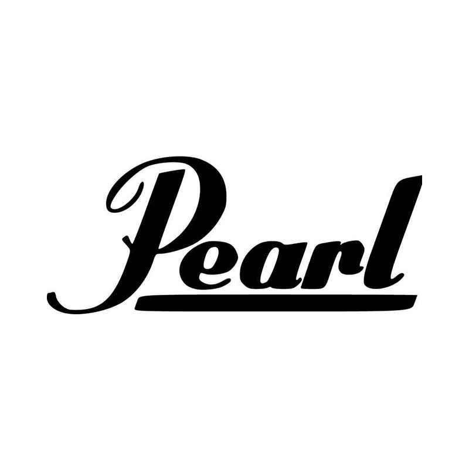

Clicca su quest'immagine per visitare la
nostra gamma di batterie elettroniche !
Clicca su quest'immagine per visitare la
nostra gamma di batterie elettroniche !
Questa è la nostra batteria della marca DDRUM, adatta agli intermedi
ha un suono abbastanza pulito
nonostante non abbia un prezzo elevato è di altissima qualità
PREZZO: 549€
MARCA: DRUM
MODELLO: SXT
Batteria completa di Fusti, Pelli, Hardware e Piatti, perfetta per il musicista principiante o intermedio con la sua potente miscela di fusti in mogano e pioppo capaci di produce un volume elevato e una potente presenza.
PREZZO: 1100 €
MARCA: PEARL
MODELLO: YT
